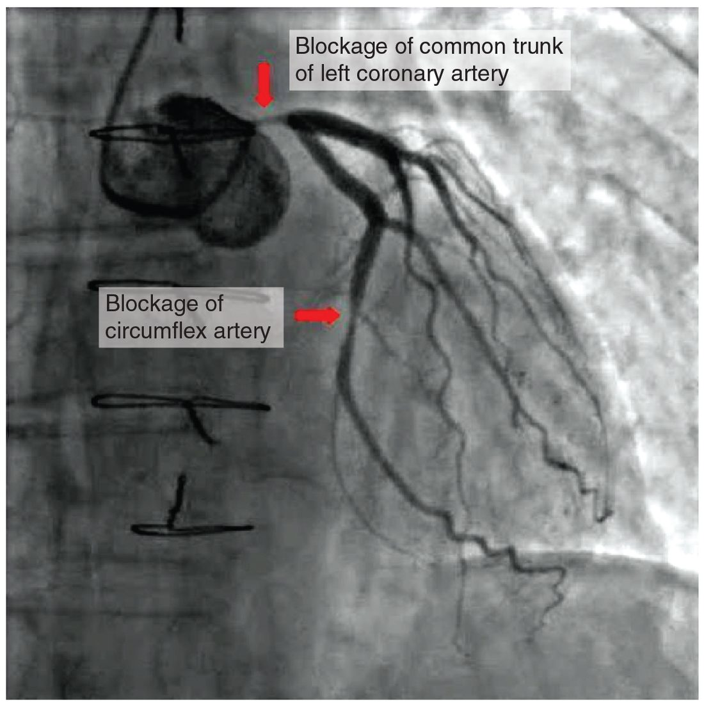

Hypertension, heart failure and shock
1Why this matters
Carlos, 27, lays his motorcycle down on a wet road and tears a deep gash in his thigh. Twenty minutes later, in the ambulance, his blood pressure is 112/90, close to normal. But his heart rate is 128, his skin is pale, cool and clammy, and he keeps asking the same question. The crew treats him as a patient in shock, near-normal pressure and all.
2What this builds on
3Quick check before you start
1. When baroreceptor firing falls, what does the cardiovascular center do?
- Raises vagal output and lowers sympathetic output
- Raises sympathetic output and lowers vagal output
- Stops all output to the heart until pressure recovers
Show the answer
Less baroreceptor input means pressure has fallen. The cardiovascular center raises sympathetic output and lowers vagal output, which raises heart rate, contractility and TPR.
- Raises vagal output and lowers sympathetic output:
- Correct: Raises sympathetic output and lowers vagal output:
- Stops all output to the heart until pressure recovers:
2. Which change increases filtration out of systemic capillaries and can cause edema?
- A rise in venous pressure
- A rise in plasma albumin
- Constriction of the arterioles feeding the bed
Show the answer
A rise in venous pressure passes back into the capillaries and raises capillary hydrostatic pressure, so more fluid filters out. More albumin or constricted arterioles would reduce filtration.
- Correct: A rise in venous pressure:
- A rise in plasma albumin:
- Constriction of the arterioles feeding the bed:
3. What does angiotensin II do to the kidneys' handling of salt and water?
- Makes them excrete more, through ANP
- Has no effect on the kidneys
- Makes them keep more, directly and through aldosterone
Show the answer
Angiotensin II makes the kidneys keep sodium directly and releases aldosterone, which increases sodium reabsorption further. Water follows the sodium.
- Makes them excrete more, through ANP:
- Has no effect on the kidneys:
- Correct: Makes them keep more, directly and through aldosterone:
4Anatomy

5How it works, step by step
- Carlos loses blood quickly from the torn vessels in his thigh.Blood volume falls, so venous return, stroke volume and cardiac output fall.
- Lower cardiac output lowers MAP, and baroreceptor firing falls.Sympathetic output rises: his heart rate climbs, and arterioles in his skin, gut and kidneys constrict.
- Constricted arterioles raise TPR while stroke volume stays low.His diastolic pressure is held up, his pulse pressure narrows, and his skin turns pale and cool.
- Constricted arterioles and low pressure lower capillary hydrostatic pressure, and renin, angiotensin II, aldosterone and ADH rise.Interstitial fluid moves into his plasma, and his kidneys keep salt and water.
- If bleeding continues, these responses are overwhelmed and oxygen delivery falls below what his tissues need.His cells shift to anaerobic metabolism, lactate rises and pressure falls: progressive shock.
6Core concepts
7A common mistake
The wrong idea: A bleeding patient with a normal blood pressure is not in shock.
What actually happens: Shock is too little oxygen delivery to the tissues, not low blood pressure. The baroreceptor reflex holds MAP near normal after losing up to about 30 percent of blood volume, by raising heart rate and constricting arterioles. A fast heart rate, a narrow pulse pressure and cool, pale skin are the early signs. A falling blood pressure is a late sign that compensation is failing.
8Check yourself
Anything you miss goes into your review queue.
1. A healthy adult rapidly loses about 1 L of blood (roughly 20 percent of blood volume), and the bleeding is then stopped. Predict each variable, first in the first minutes and then later as compensation proceeds. Compare each with its value before the bleed unless stated otherwise.
| Variable | Change |
|---|---|
| Hematocrit, first minutes | — |
| Heart rate, ten minutes later | — |
| Pulse pressure, ten minutes later | — |
| Hematocrit, eight hours later | — |
| Urine output, first day | — |
| Red blood cell count, three weeks later compared with the first day | — |
Show the answer
Immediately, the loss of whole blood lowers volume without changing blood's makeup. Within minutes the reflex speeds the heart and constricts arterioles. Over hours, fluid moves into the plasma and dilutes it, and the kidneys keep salt and water. Over weeks, EPO rebuilds the red cells.
- Hematocrit, first minutes: no change. Whole blood was lost, cells and plasma together, so the fraction made of red cells has not changed yet.
- Heart rate, ten minutes later: up. Lower MAP reduces baroreceptor firing, so sympathetic output to the SA node rises and vagal output falls.
- Pulse pressure, ten minutes later: down. Stroke volume is smaller, which lowers systolic pressure, while arteriole constriction holds diastolic pressure up.
- Hematocrit, eight hours later: down. Low capillary pressure has drawn interstitial fluid, which has no red cells, into the plasma, diluting the remaining cells.
- Urine output, first day: down. Aldosterone makes the kidneys keep sodium and the high ADH makes them keep water.
- Red blood cell count, three weeks later compared with the first day: up. Lower oxygen delivery to the kidneys raised EPO, which drives red blood cell production in the red bone marrow.
2. Two hours after a large myocardial infarction, a 66-year-old has a blood pressure of 80/58, a heart rate of 112, cool clammy skin and crackles throughout both lungs. Which type of shock is this, and why are his lungs wet?
- Cardiogenic; blood backs up behind the weak left ventricle
- Hypovolemic; blood lost into the damaged heart muscle wall
- Distributive; dilated lung vessels leak plasma proteins
- Obstructive; a large clot blocks the pulmonary trunk
Show the answer
A large infarct leaves the left ventricle too weak to pump out what the lungs deliver. Cardiac output falls, which is cardiogenic shock. Pressure rises in the left atrium and lung capillaries, and fluid filters into the lung tissue and air spaces, causing the crackles.
- Correct: Cardiogenic; blood backs up behind the weak left ventricle: Correct. A failing pump with high filling pressure behind it is cardiogenic shock.
- Hypovolemic; blood lost into the damaged heart muscle wall: An infarct does not bleed away enough blood to cause hypovolemic shock, and low volume would leave the lungs dry, not wet.
- Distributive; dilated lung vessels leak plasma proteins: His cool, clammy skin shows reflex vasoconstriction, not widespread vasodilation. The lung fluid comes from high capillary pressure.
- Obstructive; a large clot blocks the pulmonary trunk: A clot in the pulmonary trunk would cause obstructive shock but would not back fluid up into the lungs, which lie beyond the right ventricle's outflow.
3. A 72-year-old with a past myocardial infarction wakes at night gasping and must sit up to breathe. Crackles are heard at the bases of both lungs, and her ankles are not swollen. Which is the most likely problem?
- Right-sided heart failure, raising systemic venous pressure
- Left-sided heart failure, raising lung capillary pressure
- Hypovolemic shock, from blood lost into the lungs
- Distributive shock, from dilation of the lungs' vessels
Show the answer
A left ventricle damaged by the infarct cannot pump out all that the lungs deliver. Pressure backs up into the left atrium, pulmonary veins and lung capillaries, and fluid filters into the lungs. Lying flat returns more blood from the legs to the chest and worsens it.
- Right-sided heart failure, raising systemic venous pressure: Right-sided failure backs blood up into the systemic veins and causes ankle swelling and bulging neck veins, not wet lungs. Her ankles are normal.
- Correct: Left-sided heart failure, raising lung capillary pressure: Correct. Breathlessness when lying flat and crackles in the lungs point to left-sided failure.
- Hypovolemic shock, from blood lost into the lungs: She shows no signs of shock or blood loss. The fluid in her lungs is filtered plasma, not lost blood.
- Distributive shock, from dilation of the lungs' vessels: Distributive shock lowers pressure throughout the body. Her problem is a backlog of blood behind a weak left ventricle.
4. A plaque narrows a short segment of artery from a radius of 3 mm to a radius of 2 mm. By roughly how much does that segment's resistance rise?
- About 1.5 times
- About 2.3 times
- About 5 times
- About 81 times
Show the answer
Resistance varies with 1 / radius⁴. The ratio of new to old resistance is (3 ÷ 2)⁴ = 1.5⁴ = 1.5 × 1.5 × 1.5 × 1.5 ≈ 5.06. A one-third cut in radius makes resistance about 5 times higher.
- About 1.5 times: This uses the radius ratio, 1.5, without raising it to the fourth power.
- About 2.3 times: This squares the ratio (1.5² ≈ 2.25). Resistance depends on the fourth power, not the second.
- Correct: About 5 times: Correct. 1.5⁴ ≈ 5.
- About 81 times: This raises 3 to the fourth power instead of the ratio 3 ÷ 2.
5. In chronic heart failure, why do the responses that raise blood volume eventually make the patient worse?
- Extra volume raises filling pressures and congestion without adding much stroke volume
- Extra volume dilutes the blood so much that it can no longer carry enough oxygen
- Extra volume switches off the baroreceptor reflex, so heart rate falls to dangerous levels
- Extra volume lowers TPR so much that the patient develops distributive shock
Show the answer
The kidneys keep salt and water as if pressure were low. A failing ventricle sits on the flat part of its Frank–Starling curve, so more filling adds little stroke volume. The extra volume mostly raises venous and capillary pressures, worsening fluid in the lungs and tissues.
- Correct: Extra volume raises filling pressures and congestion without adding much stroke volume: Correct. More filling brings more congestion and little extra output.
- Extra volume dilutes the blood so much that it can no longer carry enough oxygen: Retained fluid dilutes the blood only mildly. The main harm is higher pressure behind the failing pump.
- Extra volume switches off the baroreceptor reflex, so heart rate falls to dangerous levels: Heart failure raises sympathetic output and heart rate. The baroreceptor reflex is not switched off by extra volume.
- Extra volume lowers TPR so much that the patient develops distributive shock: In heart failure TPR rises, from sympathetic stimulation and angiotensin II. It does not fall.
6. A 78-year-old has an average blood pressure of 168/78. What best explains a high systolic pressure with a normal diastolic pressure?
- Her heart rate is too slow, so diastole is too short
- Her stiff aorta stretches less when blood is ejected
- Her blood volume is too low to fill the arteries
- Her arterioles have dilated with age, lowering TPR
Show the answer
A young, elastic aorta stretches as the ventricle ejects, absorbing part of each surge. With age the aorta stiffens, so the same stroke volume raises pressure more during systole, and there is less stored recoil to hold pressure up in diastole. Systolic pressure rises and pulse pressure widens.
- Her heart rate is too slow, so diastole is too short: A slow heart rate lengthens diastole, not shortens it, and would not explain a high systolic value.
- Correct: Her stiff aorta stretches less when blood is ejected: Correct. Arterial stiffening raises systolic pressure and widens pulse pressure.
- Her blood volume is too low to fill the arteries: Low volume would lower pressures, not raise systolic pressure to 168.
- Her arterioles have dilated with age, lowering TPR: Lower TPR would lower pressure, especially diastolic, and would not raise systolic pressure.
7. Carlos, 27, has a deep thigh wound. His pressure is 112/90, heart rate 128, and his skin is pale, cool and clammy. Which statement best describes his condition?
- He is not in shock: his systolic pressure is above 90 mm Hg
- He is in distributive shock from widespread vasodilation
- He is in compensated shock, with pressure held up by the reflex
- He is in irreversible shock, shown by his narrow pulse pressure
Show the answer
Blood loss has lowered his stroke volume, but the baroreceptor reflex is holding MAP up with a fast heart and strong arteriole constriction. The narrow pulse pressure (22 mm Hg) and cool, clammy skin show how hard the reflex is working. This is compensated hypovolemic shock, and it can progress quickly if bleeding continues.
- He is not in shock: his systolic pressure is above 90 mm Hg: Shock is defined by oxygen delivery, not a pressure number. His fast heart, narrow pulse pressure and cool skin are early signs of shock.
- He is in distributive shock from widespread vasodilation: Widespread vasodilation would make his skin warm and his diastolic pressure low. His cool skin and high diastolic pressure show constriction.
- Correct: He is in compensated shock, with pressure held up by the reflex: Correct. His reflexes are compensating for the lost volume.
- He is in irreversible shock, shown by his narrow pulse pressure: A narrow pulse pressure is an early sign of compensation, not a sign of irreversible damage. He is alert enough to talk and still compensating.
9Summary
Hypertension is pressure that stays above normal; the kidneys hold it high, TPR rises, and over years it thickens the left ventricle and damages arteries. Atherosclerosis builds plaques in the tunica intima that narrow arteries and can rupture into a thrombus, causing heart attacks and strokes. Heart failure is a heart that cannot pump enough at normal filling pressures: left-sided failure congests the lungs, right-sided failure the systemic veins, and the compensating reflexes and hormones eventually make it worse. Shock is too little oxygen delivery to the tissues. It is hypovolemic, cardiogenic, obstructive or distributive, depending on whether volume, the pump, the circuit or vessel tone has failed. After a hemorrhage, the reflex holds pressure within seconds, fluid moves into the plasma over hours, the kidneys rebuild volume over a day, and proteins and red cells return over days to weeks.